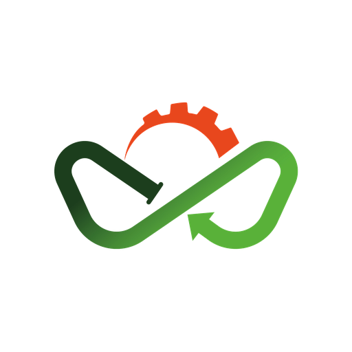

♻️
ثبت درخواست بازیافت
شهروندان با چند لمس درخواست جمعآوری ضایعات ثبت میکنند و وضعیت سفارش را لحظهبهلحظه پیگیری میکنند.

Waste724با Waste724 درخواست جمعآوری بازیافت ثبت کنید، مسیر سفارشها را پیگیری کنید و در بازار خرید و فروش ضایعات با قیمت روز معامله کنید — همه در یک اپلیکیشن سبک اندروید.
شهروندان با چند لمس درخواست جمعآوری ضایعات ثبت میکنند و وضعیت سفارش را لحظهبهلحظه پیگیری میکنند.
رانندگان سفارشهای نزدیک خود را میبینند و مسیر جمعآوری را بدون کاغذبازی مدیریت میکنند.
قیمت زنده ضایعات، آگهی خرید و فروش و مزایده زماندار برای بارهای عمده در waste724.ir.
بله، دانلود و استفاده از اپلیکیشن Waste724 کاملاً رایگان است و هزینه اشتراکی ندارد.
بله؛ شهروندان میتوانند از recycle.waste724.ir، رانندگان از driver.waste724.ir و بازار ضایعات از waste724.ir بدون نصب اپ استفاده کنند.
پس از دانلود، فایل APK را باز کنید و یکبار به گوشی اجازه نصب از منابع ناشناس بدهید؛ سپس اپ مانند هر برنامه دیگری نصب میشود.
از بخش تماس و پشتیبانی در سایت اصلی waste724.ir میتوانید درخواست پشتیبانی ثبت کنید.